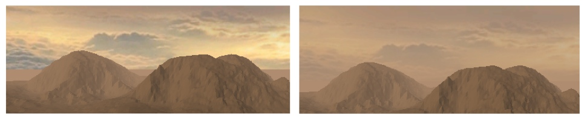

In OpenGL è estremamente semplice ottenere un effetto di nebbia ambientale, tutto quello che occorre fare è abilitare il relativo flag (GL_FOG) e impostare per mezzo dell'istruzione glFog i diversi parametri che descrivono la sua realizzazione in termini matematici.
La nebbia in OpenGL è ottenuta effettuando il blending dei
frammenti del frame buffer con il colore specificato per la nebbia.
La quantità di colore che viene miscelata dipende dalla formula
scelta per la nebbia, dai parametri forniti a tale equazione e –
ovviamente – dalla distanza di ogni frammento dall'osservatore, la
quale viene proporzionata con due valori che stabiliscono la distanza
dalla quale inizia a manifestarsi l'effetto di nebbia e la distanza
massima alla quale è possibile vedere gli elementi della scena.
OpenGL mette a disposizione tre funzioni per l'equazione che gestisce
la nebbia: GL_EXP,
GL_EXP2 e GL_LINEAR.
Le prime due adottano una curva esponenziale nella distanza e
parametrizzata in base alla densità della nebbia, l'ultima segue una
retta lineare che parte dalla distanza minima fino alla massima e,
nella maggior parte dei casi, fornisce dei risultati estremamente
realistici con pochissimo sforzo.
Limitarsi a questo
semplice passo tuttavia porta ad un risultato non del tutto
apprezzabile, come si vede nell'immagine in basso a sinistra: per
come è stata progettata la skybox, questa
non può avvalersi dell'implementazione fornita da OpenGL in quanto
la distanza del cielo non è quantificabile, il risultato è che,
mentre il terreno e i vari elementi della scena sfumano in lontananza
– il cielo resta perfettamente nitido e questo crea una zona di
elevato contrasto e demarcazione in corrispondenza della linea
dell'orizzonte. Allargare le dimensioni della skybox non
migliorerebbe la situazione visto che si otterrebbe o un cielo
completamente opaco oppure una nebbia mal distribuita visto che i
punti sulla superficie della skybox non formano una sfera e quindi si
porterebbero a distanze variabili dall'osservatore.
Lo stratagemma
utilizzato è stato quello di sovrapporre alle quattro facce laterali
della skybox un rettangolo costruito ad-hoc e tale da essere
completamente trasparente in alto e opaco in basso, dello stesso
colore di quello utilizzato per la nebbia. In questo modo con una
semplice operazione di blending, si ottiene un gradiente che sfuma
verso l'alto a partire (circa) dalla linea dell'orizzonte. Il
risultato è che la linea netta che prima separava il terreno dal
cielo ora è ben nascosta e si ha la sensazione che la foschia si
diradi verso l'alto, come mostrato nella figura di destra.
La
posizione dalla quale fare iniziare il gradiente non è ovviamente
fissa e – in generale – è legata da funzioni trigonometriche
piuttosto articolate che tengono oltretutto conto della posizione,
altezza e orientamento dell'osservatore e dalla forma della skybox.
Per semplicità si è utilizzata una semplice proporzione lineare
basata sulla quota dello spettatore. Quando la telecamera raggiunge
altezze troppo elevate lo scompenso torna visibile, ma per la quota
massima che può guadagnare l'elicottero non si hanno difetti troppo
notevoli.